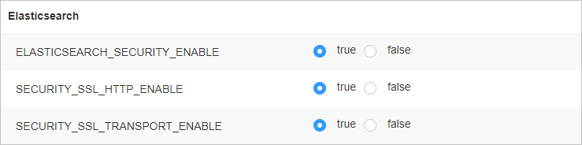

If data encryption during the communication between the product and the big data platform is required to ensure secure communication, see this section about how to enable the security encryption mode and import the CA certificate on the big data platform. Otherwise, skip this section.
This section uses FusionInsight Manager 8.2.0 as an example to describe related operations. The operations vary depending on the big data platform. For details, see the product documentation of the corresponding big data platform.

Obtain the CA certificate and replace the certificate on the big data platform. Keep the obtained certificate secure for further use during Elasticsearch cluster registration. For details, see Replacing the CA Certificate in the MapReduce Service (MRS) x.x.x-LTS Usage Guide (for Huawei Cloud Stack x.x.x).
You can log in to the Elasticsearch node, go to the config/certs directory in the Elasticsearch installation directory, find and download the http-ca.crt certificate file. (The certificate file has been configured during Elasticsearch installation and does not need to be imported separately.)